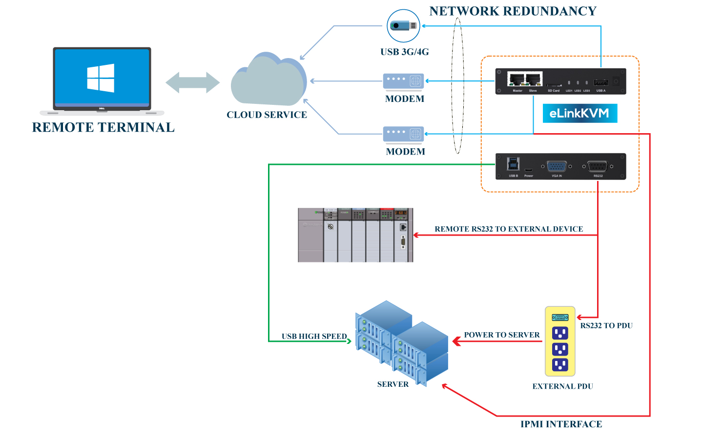
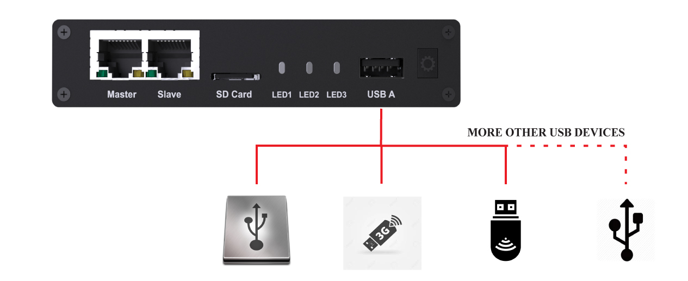
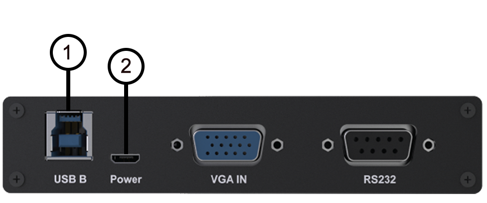
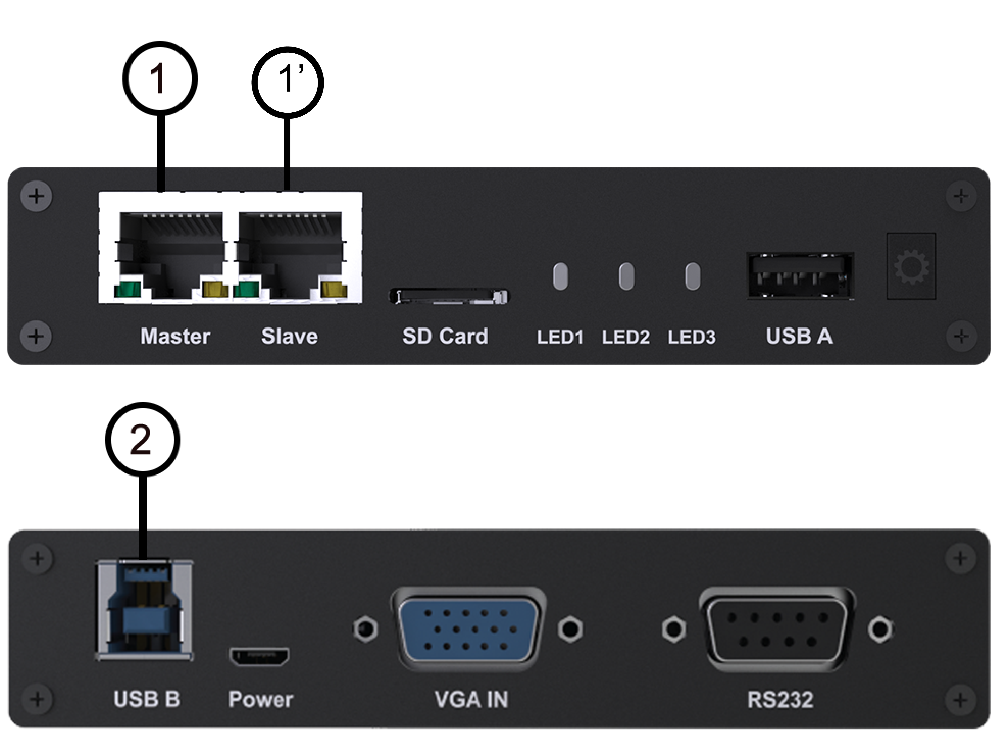
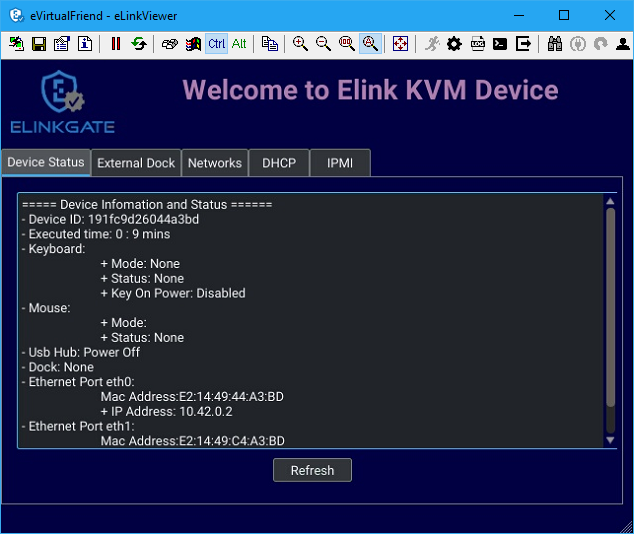
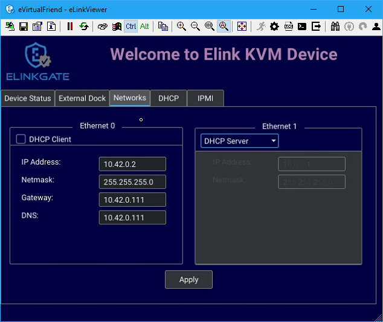
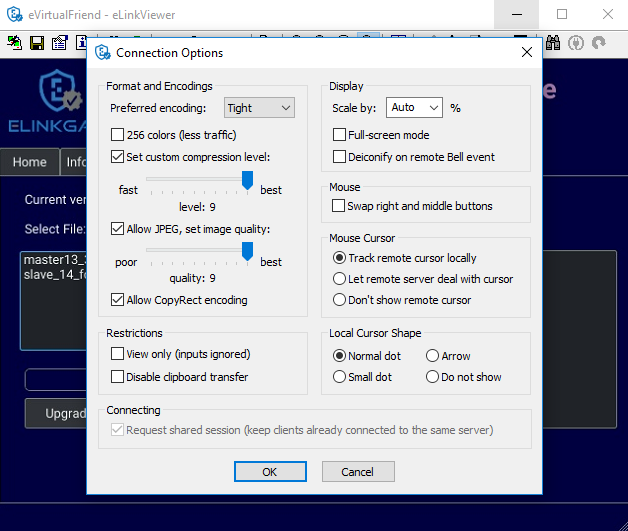
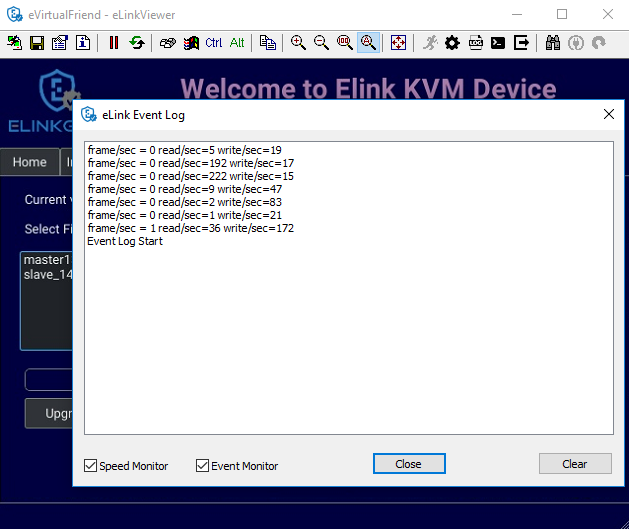
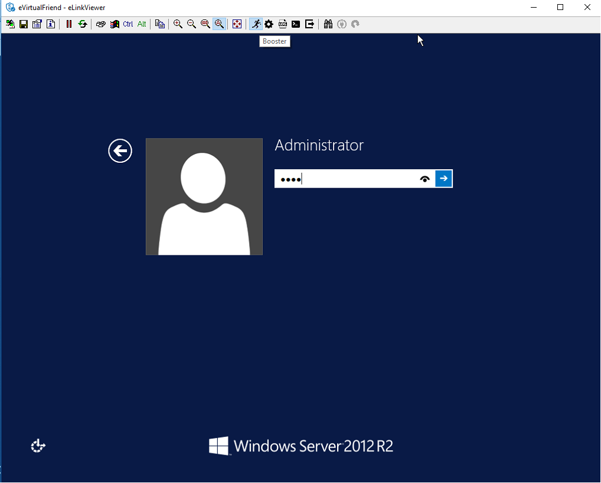

Table of Contents
eLinkKVM Guide
Chapter 1: Introduction
a. Overview
A KVM switch (an abbreviation stands for Keyboard, Video and Mouse") is a hardware device that enables a user to control multiple computers from one or more sets of keyboards, video monitors, and mice. For example, in the following diagram, the computer on the right is currently being controlled by the peripherals.
 |
|---|
| Figure 5: Account login UI |
###[TODO] Replace Wikipedia diagram about with our original diagram
Normal KVM switches attach controlling and controlled devices directly to itself. In contrast, KVM over-IP switches, provides over-the-internet functionality. This means, instead of physically connected to a KVM switch through very long cables and are usually limited in a room, a floor or a building, the controlling devices can be anywhere in the world that can connect to a KVM over-IP switch and control the connected computers with a normal Internet connection.
Another approach for remote controlling is using pure software. However, as a pure software solution is usually limited only in an operating system environment. Without an operating system, a software solution is infeasible. Unlike software solutions for remote controlling, a hardware solution like a KVM switch can be used as a replacement for a computer monitor. This diagram demonstrates the scope difference between a software and a hardware solution:
 |
|---|
| Figure 5: Account login UI |
eLinkKVM is one of such KVM-over-IP devices. However, unlike other KVM-over-IP solutions that are solely hardware solutions, eLinkKVM takes on a unique hybrid approach that combines both hardware and software. While being a hardware solution similar to other KVM-over-IP switches, but unlike other KVM-over-IP switches, eLinkKVM takes a step further with its patented technology called Booster. Booster is a
software solution that works together with eLinkKVM hardware to uplift processing performance by utilizing computing resources of the remote hosts. Booster is not limited to an operating system
environment, but also in BIOS and UEFI environments.
 |
|---|
| Figure 5: Account login UI |
Operators can monitor and access their computers from remote locations using a remote control software. An eLinkKVM device connects to a local area network or directly to a personal computer (PC) using a standard ethernet cable, then uses a USB cable and a video display cables to connect to a server and complete control it with Keyboard, Video and Mouse functionality from the eLinkKVM device.
Because the eLinkKVM uses the Internet as its data communication medium, the server it is connected to can be accessed from any authorized computer across the Internet, regardless of physical location.
A user at a remote location connect to the eLinkKVM via its IP address. Once a connection has been established and authorization granted, the remote computer can exchange keyboard, video and mouse signals with the remote server (of which the eLinkKVM is attached to), just as if they were physically present and working on the equipment directly.
b. Introduce about Booster
Booster is a patented technology that allows eLinkKVM to utilize computing resources from remote hosts to improve remote performance. To quickly summarize, Booster includes software agents that work on major OS platforms (Windows, Linux and Mac OS) however,unlike traditional software solutions, Booster agents can also operate in BIOS and UEFI environments, independent of any operating system.
These software agents are installed on remote hosts to utilize the extra computing power on the remote hosts to accelerate screen data processing without affecting performance. This enables higher quality remote screen and more responsive interactions with the remotely remote hosts.
Booster also helps reducing the loads on eLinkKVM devices, making eLinkKVM devices run cooler and extend the longevity of eLinkKVM devices, while delivering higher performance.
The following diagram shows the scope covered by Booster:
| Figure 5: Account login UI |
c. Features
The eLinkKVM is designed to help the IT person remotely operate the Server in most responsive and efficient way. The device is not only allowing remotely access at Bios Level which is similar traditional KVM over IP but also adding more features:
Full Bios-level control over an IP Network
The video capture hardware (Hardware mode) is designed to decode the video signal up to 1920x1080 that help to monitor the screen in any situation.
Patented Booster technology
Faster and higher resolution with Booster technology, a patent technology allows monitor the screen with faster transfer, any video resolution with just a USB connection for almost any situation. See the Booster chapter for more information.
Featureful native client software
Client software is bundled with many unique features: scripting and image recognition, to automate manual operations. See the eLinkViewer chapter for more information.
Virtual Media support with 8GB Internal Flash or 64GB with SD Card
Instead of using a separate computer as a share network storage to emulate the Virtual Media, eLinkKVM itself is a high performance shared network storage device.
USB-Powered Design
The power is getting from USB port of Server, no external power supply required
RS232 Serial Port
For Serial Console, Remote Dial In or control external PDU
Built-in IPMI (Intelligent Platform Management Interface) utility
eLinkKVM understands IPMI and allows control the server that support IPMI interface. The user may power on/off/reset server without using an external PDU
Support USB Host Interface
The USB Host port allow eLinkKVM control the USB 3G/4G, external USB storage or USB security device to add more functionality.
Flexible Two Ethernet Ports
The Ethernet ports can be configured to work independently to connect 2 different networks with the master port can be configured as a DHCP server. Or 2 ports can be used to connect a server to a router, using a single server Ethernet port.
Built-In USB Hub
Physically emulate all USB device (Mouse, Keyboard, Storage) with just one USB cables
Scalability
eLinkKVM can scale to control more than one computers by connecting the computers to eLinkSwitch.
Compact form factor
Small footprint of eLinkKVM making it easy to attach to existing servers
Low cost
Ideal for distributed IT system environments such as small branch offices, campuses, test labs, and server hosting environments.
Remote firmware upgrade Firmware can be easily upgraded remotely with a few mouse clicks.
d. eLinkKVM Phyical Connections
eLinKVM can be flexibly setup to connect between a remote terminal and a remote host with many options.
To connect a remote terminal over IP, the following methods can be used:
- Connect eLinkKVM directly to a router. A remote terminal then can access eLinkKVM over the Internet.
- Connect eLinkKVM directly to a USB 3G/4G. A remote terminal then can access eLinkKVM over the Internet.
- Direct connect eLinkKVM to the remote terminal. A remote terminal then can access eLinkKVM with a direct connection, Internet is not required.
After setting up, eLinkKVM is ready to be accessed by a remote terminal.
To connect a remote host to an already connected eLinkKVM device, the following methods can be used:
- Connect a VGA cable between the remote host and eLinkKVM to capture the host screen.
- Using a RS232 cable to capture its serial output.
- Connect the remote host to the Slave port on eLinkKVM to manage through IPMI interface.
After phsyical connections on both ends are done, a remote connection is up and running.
|  |
|---|
| *Figure 1: Complete system eLinkKVM connect to Router, connect to IPMI server, USB, RS232, external PDU, USB 3G...** |
Todo: Bỏ kết nối RS232 trong hình vẽ tới PDU vì IPMI có thể dùng để power/on/off (Kevin)
 |
|---|
| Figure 2: ELinkKVM Lite A minimal connection just USB (to run Booster), eLinkKVM connect to Router, eLinkKVM connect to IPMI |
 |
|---|
| Figure 3: using feature network bridge to save network connection (network cable to eLinkKVM to Master Connector & from Slave Connector to Server), eLinkKVM connect USB to server |
 |
|---|
| Figure 4: Seperate network layer |
|  |
|---|
| Figure 5: Extend function with USB device |
 |
|---|
| Figure 6: ELinkKVM configure network through multiple network |
e. Technical Specifications
Hardware specification
| Feature | Description |
|---|---|
| Networks | 2 Ethernet ports (10/100Mbps) |
| Storage | Internal Flash Storage (8GB) that can be accessed by eLinkViewer software |
| Interfaces | Micro SD-CARD (extend up to 64GB) |
| RS232 interface | |
| USB Host interface to extend to USB 3G/4G, USB Wifi, USB Storage | |
| Video | VGA Port, Video Full HD Resolution |
| VGA Text mode: 640x350, 640x480, 720x400 | |
| VGA Graphic mode: 640x480, 800x600, 1024x768, 1152x864, 1280x1024, | |
| 1440x900,1680x1050,1600x1200,1920 x1080 | |
| Secure, full BIOS-level control of remote servers over an IP network |
Software Specification
| Feature | Description |
|---|---|
| Remote Access Features | Support VNC Protocol |
| Emulation the USB Relative Mouse and Absolute Mouse | |
| Emulation the USB Keyboard | |
| Capture Full HD resolution with Hardware Mode | |
| Capture all resolutions with 100% screen quality using the patented Booster Mode | |
| Connections | Direct Connect Through TCP/IP |
| Extension through USB 3G/4G | |
| Coming the Cloud Service to connect behind Firewall | |
| Securities | Secure by SSL |
| Multiple Login Accounts (Up to 8 users) | |
| Remote Server Power Control | Remote Reset/On/Off Server through an IPMI GUI Interface from eLinkViewer |
| Control the External PDU through RS232 | |
| Virtual Media | Disk images (.iso, .raw, .hdd, .hdd2** can be mounted as a USB 2.0 devices on |
| Server power design | No external power supply required |
| on a remote computer for easy software installation and system updates | |
| Multi-purpose USB port | Keyboard, Mouse and Storage functionalities are integrated in a single USB port. |
| Compact form factor | Making it easier to attach to existing servers |
| Batch setup | Multiple eLinkKVM devices can be scripted by the eLinkViewer software to get |
| the same configuration. |
eLinkViewer Software Specification
eLinkViewer is an application specifically made to view remote screen content captured by an eLinkKVM device as well as interact with a remote computer.
eLinkViewer also provides functionalities to manage an eLinkKVM device.
| Feature | Description |
|---|---|
| General | Support multiple VNC Server and eLinkKVM |
| Remote protocol using VNC and extension commands for eLinkKVM | |
| Support video scaling and full screen | |
| Automation | Support image recognization and Python scripting allow automation the activities |
| IPMI | Support IPMI protocol to control server with GUI |
| Platform | Currently support Windows |
| Bandwidth Optimization | Provide video quality settings to maximize remote performance for the available |
| network bandwith | |
| Screen scaling | Viewer screen can be scaled to any resolution independent from remote computer's |
| resolution or even enter a full-screen mode. In full-screen mode, the viewer | |
| screen scales according to the remote computer's resolution. |
f. Components
| Figure 5: Account login UI |
Front view
| ID | Component | Description |
|---|---|---|
| 1 | USB Type-B | power the device and acts as a communication channel between eLinkKVM and a server |
| 2 | Power | the secondary source is supplied by a micro USB cable. It is neccessary when the power |
| from USB Type B port is insufficient, or keeping the connection to eLinkKVM | ||
| alive when the server is power off. | ||
| 3 | VGA | For capturing and outputting video signal to send and receive over the internet. |
| 4 | RS232 | the serial communication port (COM port**. This port will be connected to the server serial port. |
Rear view
| ID | Component | Description |
|---|---|---|
| 1 | Ethernet ports (10/100Mbps) | Master: can be configured as a DHCP server, a DHCP client or a static IP |
| Slave: can be configured as a DHCP Client or a static IP | ||
| 2 | SD card | allows a user to expand storage capacity with an external micro SD card |
| 3 | Status Leds 1,2,3 | signal device statuses through different led colors |
| 4 | USB Type-A | allow to attach an external peripheral device such as USB 3G/4G, |
| USB Mass Storage, etc., to extend eLinkKVM functionality. |
Chapter 2: Installing eLinkKVM
This chapter describes how to install the eLinkKVM device and necessary software to work with eLinkKVM . It contains the following sections:
- Package contents
- Power on eLinkKVM
- eLinkKVM in Setup Mode
- eLinkKVM in Operating Mode
- Network setup
- eLinkViewer setup
a. Package Contents
In addition to the eLinkKVM device, the package contains the following items:
- 1 USB 2.0 Type-B Cable
- 1 VGA cable
- 1 RS232 cable (optional)
- 1 USB Power Adapter (5V - 2A) and Micro USB cable
- Mounting kit (see Chapter 4: Mounting Bracket Kit)
- Quick Start Guide
b. Power On eLinkKVM
The USB-Powered design allow eLinkKVM power directly from server USB port (1) without an external power. But in some cases, it is necessary to keep the device active while the server can be turned off or eLinkKVM need to provide the power to external USB 3G. This can be done by supplying another 5V power source to the micro USB port (2) on an eLinkKVM device.
|  |
|---|
| Figure 5: Account login UI |
During the bootup process the 3 LEDs will be blink and turn green when the device is ready. User can start using the device.
 |
|---|
| Figure 5: Account login UI |
| LED ID | Color | Description |
|---|---|---|
| 1 | Green | TBD |
| 2 | Green | TBD |
| 3 | Green | TBD |
c. eLinkKVM in Setup Mode
 |
|---|
| Figure 4: Multiple network layer |
The eLinkKVM is designed to be just plug and play. User can just install the device in operation mode and start using immediately. But there are some case when the auto DHCP IP address may not work the user may have to setup it manually. Below are the connection diagram when setup eLinkKVM
Perform following steps to configure eLinkKVM:
- (1) Connect Ethernet RJ45 cable between eLinkKVM and remote terminal
- (2) Connect USB Type-B cable to remote terminal and Type-B port of eLinkKVM device

d. eLinkKVM in Operation Modes
The main usage of eLinkKVM is to remotely monitor a server. The basic connection is described below where eLinkKVM is connected to Server through USB cable and VGA and connect to remote terminal through ethernet.
 |
|---|
| Figure 5: Basic eLinkKVM Operating Mode |
Perform following steps to configure eLinkKVM:
- (1) Connect Ethernet RJ45 cable between eLinkKVM and remote terminal
- (2) Connect VGA cable between Server and VGA port on eLinkKVM
- (3) Connect USB Type-B cable between Server USB port and Type-B port of eLinkKVM device
 |
|---|
| Figure 5: Account login UI |
e. Network configuration
Todo (Tú): explain this eLinkKVM support multiple way to detect or setup IP address for device. (1) Ethernet Slave as DHCP client -> but in case the router policy does not allow transfer discovery package, it can not work (2) The work as DHCP server so PC can get IP from device, it may not work if the PC does not have Ethernet port (3) configure as mass storage disk -> compare with using RS232 method, or OSD on CN8000A . We may not need to explain in detail how to config Window to get IP address as other manual don't explain that
eLinkKVM supports two Ethernet ports for network connection:
- Ethernet Master: by default, configured as a DHCP server.
- Ethernet Slave: by default, configured as a DHCP client.
To connect to an eLinkKVM device, a network connection between a remote terminal and an eLinkKVM device is required. The connection can either be:
- Direct connect: An ethernet cable connects directly between a remote terminal and an eLinkKVM device.
- Local Area Network: Both the remote terminal and an eLinkKVM device are connected to a local area network (LAN). eLinkKVM is plugged to the router of the network.
- Over the Internet: an eLinkKVM device is provided with a static address for a remote terminal to access it anywhere in the world.
When a connection is established, its network interface must be configured in the operating system of the remote terminal. Currently, only Windows is supported.
Windows
- Open
Control Panel->All Control Panel Items->Network Connections.
[TODO] Add an demo picture
- Right click on Ethernet Device of the eLinkKVM connection, select `Properties.
[TODO] Add an demo picture
- Double click
Internet Protocol version 4 (TCP/IPv4)
[TODO] Add an demo picture
- Check the following options:
- Ontain an IP Address automatically
- Obtain DNS server address automatically
Verify the Setting
The default address for Ethernet Master port is
10.0.0.1. To check if the hardware is setup correctly:On Windows, open
cmd.exe. On Linux and Mac OS, open a terminal emulator.Type the following command:
ping 10.0.0.1If `ping** receives response packets, this means eLinkKVM is connected. To actually use eLinkKVM, the software eLinkViewer is required. The basic usage is described in the next chapter.
c. Setup eLinkViewer
Download the eLinkViewer setup package from www.elinkgate.com/support/download.html just run setup.exe and following the instructions.
Go to chapter 3 (Basic usage) to see how to run and using eLinkViewer.
Chapter 3: Remote management software for eLinkKVM with eLinkViewer
Todo (Tú): refer the setup eLinkViewer above, explain how to get IP address of eLinkKVM, the viewer can connect to VNC compatible server and eLinkKVM...explain about 3 VNC mode: dummy, vga, booster. List down the feature of eLinkViewer here...Rearrange content as below
- Login
- Basic Remote Control: Sending Key, Mouse, Video Setting, scalling, send special keys...
- eLinkKVM Mode Setting UI
- Python Console UI
- Event Log UI
- File Transfer UI
- IPMI Command Center
- Serial Console (TBD)
- eLinkViewer Image Capture
- Operation Recording (TBD)
eLinkViewer is a specialized software for remote control and management of an eLinkKVM device. Booster technology is only available with eLinkViewer.
a. Basic usage
Login
TODO need to disbale Local Account/Online Account
To connect to an eLinkKVM device, fill the configured IP address in the textbox next to the Server field and click Connect to connect eLinkViewer to the eLinkKVM at the configured IP address:
| Figure 5: Account login UI |
Options: configure eLinkKVM-VNC connection
| Figure 5: Account login UI |
Scan: Scan for all eLinkKVM devices in the current local area network (LAN)
| Figure 5: Account login UI |
After connecting to an eLinkKVM device, the viewer screen switches to Dummy screen. The Dummy screen displays device status and settings.
 |
|---|
| Figure 5: Account login UI |
 |
|---|
| Figure 5: Account login UI |
Quick usage
Dummy screen includes many tabs that displays an appropriate screen
for the functionality of each tab. Assume the eLinkKVM device is
properly setup with VGA cable attached, to start remote controlling,
simply switching from Dummy video screen to VGA video screen:
- Click
ELink Configuration. - Click
VGA. - Click
OK.
The default Dummy screen should be switched to the actual output
from the remote remote host.
| Figure 5: Account login UI |
Disconnect from an eLinkKVM device
- Click the button
- The dialog box
announces connection successfully terminated.
| Figure 5: Account login UI |
b. Dummy Screen
i. Device Status
The default screen when successfully connected to an ElinkKVM device.
|  |
|---|
| Figure 5: Account login UI |
ii. External Dock
Display basic info of Dock if current eLinkKVM connected to a eLink Dock
| Figure 5: Account login UI |
iii. Networks
Display the current network configuration of an eLinkKVM device and allows changes accordingly:
|  |
|---|
| Figure 5: Account login UI |
iv. COM Port
Display the current COM port configuration of an eLinkKVM device and allows changes accordingly:
TODO need to add comport here
| Figure 5: Account login UI |
DHCP
Display all IP address already allocated by DHCP server of eLinkKVM
| Figure 5: Account login UI |
v. IPMI
Display the current IPMI configuration of an eLinkKVM device and allows changes accordingly:
| Figure 5: Account login UI |
vi. Admin
vii. Upgrade
Display the current firmware version of an eLinkKVM device and allows
upgrading to a newer firmware. The firmware must be first uploaded
onto the device using File Transfer feature of eLinkViewer.
| Figure 5: Account login UI |
c. eLinkKVM Toolbar
Connection user interface:
| Figure 5: Account login UI |
- Create a new connect to an eLinkKVM device
 |
|---|
| Figure 5: Account login UI |
- Store current vnc session as a
.vncfile - eLinkKVM connect options
|  |
|---|
| Figure 5: Account login UI |
- Current connection status
- Pause frame transmitting
- Request refresh current remote screen
- Send
Ctrl + Alt + Deletekey combination - Press/Hold
Ctrlkey - Press/Hold
Altkey - Open eLinkViewer
File Transferwindow
| Figure 5: Account login UI |
eLinkViewer allows data transfer from a local PC to an eLinkKVM device
with File Transfer:
- Click
File Transferon eLinkViewer toolbar .File Transferwindow appears. To the left is a directory tree of the local PC, to the right is the directory tree of the eLinkKVM device. - Browse the local directory tree and select a file or directory to upload to an eLinkKVM device. Next, on the directory tree of the eLinkKVM device, select a path to store the file or directory.
- Finally, click the button
>>to transfer the selected file/directory. A confirm dialog appears. ClickYesto confirm or clickNocancel the action. After confirming the transfer, the transfer starts and a progress bar that displays the transfering process starts running.
- Scale in
- Scale out
- Scale (100%)
- Auto zoom
- Full screen (press
Ctrl + Shift + Alt + Fto return to windowed eLinkViewer) - Turn booster mode on/off
- eLinkKVM Configuration
- Open event log
- Open Python script command prompt
- Disconnect
- Scan IPMI
| Figure 5: Account login UI |
d. Keyboard, Video and Mouse Settings
| Figure 5: Account login UI |
The viewer provides a dialog called Elink Configuration that includes the following options to configure how an eLinkKVM emulates keyboard, video and mouse.
Key:
- HID USB : use real keyboard (USB).
- HID VNC : use software keyboard (VNC protocol)
- Serial: use software keyboard (serial protocol)
Mouse:
- HID USB : use real mouse (USB)
- HID VNC: use software mouse (VNC protocol)
- ABS USB: use real mouse, but sync both local and remote mouse as one mouse pointer (USB absolute hid)
Video:
- Dummy : configure network and serial connections
- VGA: configure VGA display
- Booster: enable remote management with Booster. This will be covered in later chapters.
- Serial: enable serial display and communication
- IPMI: enable Serial Over Lan (SOL) with IPMI
File browsing and disk image mounting:
- Path 0/1/2/3: File paths to disk images
Browsebutton allows navigating to the disk images with a file explorer:
| Figure 5: Account login UI |
- Example: Configure eLinkKVM to use USB Key, Vnc Mouse and Booster
mode with
refind.hdd2disk image:
| Figure 5: Account login UI |
e. Python Console UI
TODO
f. Event Log UI
|  |
|---|
| Figure 5: Account login UI |
g. IPMI Command Center
IPMI Interface:
| Figure 5: Account login UI |
IPMI command center allows a user to scan servers with IPMI ports in a local area network and connect to these server to run IPMI commands.
- Start IP: start IP to begin scanning
- Stop IP: End IP to end scanning
- User Name - Password: user name and password for each IPMI server. For example, default username and password are ADMIN/ADMIN for a Super Micro server.
- Scan : start scanning for an IPMI server
- Stop: End a current scanning process
- Connect: connects to an IPMI server. When an IPMI server is found, an IP address is display, click on the IP address to select then enter a Username and Password.
- Power On: Turn a server on with IPMI
- Reset with
- Reset : restart a server
- Reset to Bios Setup: restart a server and enter BIOS
- Reset to USB: restart a server and boot with a USB device
- Sol Active: enable IPMI management with Serial Over Lan (SOL)
- Close : Close IPMI command center
Use IPMI command center to scan and run IPMI commands.
- Click
- Enter Start IP and end IP. Limit the ranger of IP scanning.
- Click
Scanto start scanning. Found IPMI servers are displayed as a list. - Click on one of the found IPMI IP addresses, enter
UsernameandPassword, then clickConnect - Click
Power On,Reset, etc., to run appropriate IPMI commands.
| Figure 5: Account login UI |
Chapter 4: eLinkKVM Configuration
a. User Management
b. Network Configuration
Static IP configuration
Steps to configure static IP for an eLinkKVM device:
- Power up an eLinkKVM device and wait for the device to start up completely (all LED1 , LED2, LED 3 light up).
- Use a Ethernet (RJ45) cable to connect a PC to the Ethernet Master port. The default IP is
10.0.0.1. - Open eLinkViewer, enter
*10.0.0.1*and clickConnectto connect to the eLinkKVM device:
| Figure 5: Account login UI |
When connected, eLinkViewer displays its home screen with many tabs for different screens. One of the tab is Network. Click on Network tab to move to this screen:
| Figure 5: Account login UI |
- The
Networkscreen displays the following fields:
- IP Address
- Netmask
- Gateway
- DNS
Similar to how an ethernet adapter can be configured in an operating system.
Example:
Instead of using the default IP address 10.0.0.1, the IP address of the connected eLinkKVM can be changed to 10.0.0.2.
xxxxxxxxxxIp address: 10.42.0.2Netmask: 255.255.255.0GateWay: 10.42.0.1DNS: 10.42.0.1
| Figure 5: Account login UI |
| Figure 5: Account login UI |
Dynamic IP Configuration
Dynamic IP address is acquired automatically, issued by a DHCP server. In this case, the connected eLinkKVM device must be configured as a DHCP client.
[TODO] Put a screenshot showing how to select DHCP Client
c. IPMI Configuration
d. Offline Configuration
eLinkKVM supports configuration with a text file. Steps:
| Figure 5: Account login UI |
- Press
Enter Configurationbutton an eLinkKVM device. The firmware on the eLinkKVM device then configures itself as a storage device. - Open the drive
ELINKCONF. - In
ELINKCONFdrive, there is a configuration file that can be editted by any text editor. - Edit the file following eLinkKVM configuration syntax. Store the file and reset eLinkKVM to use the new configuration.
| Figure 5: Account login UI |
e. TODO Factory Reset
Chapter 5: Booster Mode
Booster is a patented technology for eLinkKVM and related ElinkGate products. Booster includes software agents for each major OS platform (Windows, Linux and Mac OS) that are installed on controlled computers. When an eLinkKVM device is attached to a controlled computer, the installed software agent is activated to cooperate with a eLinkKVM device using a specialized proprieteray protocol. The software agent then utilizes the available computing resources on the remote host to greately accelerate video input and output processing. As a result, eLinkKVM can deliver higher performance at higher resolutions for an extremely economical price.
To enable Booster techonlogy, a user only needs to install the
accompanied software components on an existing operating-system
installation. For a fresh computer that need a new operating-system
installation, a tool called elinkSetuptool is provided to help
creating install disk images with embedded Booster from existing
installation ISO files, which is covered in the next chapter.
These disk images can be loaded on eLinkKVM internal storage for remote operating-system installations on new computers with Booster enabled through the whole installation process. After the installation process is done, the freshly installed operating system is also pre-installed with Booster software to allow a user to continue using Booster without any interruption.
|
|---|
| Figure 5: Account login UI |
Once a Booster agent is installed on a respective operating system,
simply click the Booster icon to start getting remote screen with
Booster.
|  |
|---|
| Figure 5: Account login UI |
Screen quality may improve slightly or significantly compared to VGA hardwrae mode, depends on the quality of the VGA cable. Remote keyboard and mouse interactions become much more responsive.
Customize Booster Mode
To make it convenient to switch between Booster and other modes, eLinkViewer allows a user to customize Auto Booster Toggle button. Pressing this button allows a user to switch between a pre-configured Booster mode and the current mode.
Steps to configure Booster mode:
- Click
ELink Configurationbutton. - From
ELink Configurationselect a remote display mode. - Similarly, select a Key mode
- Next, select a Mouse mode
- Select
Baseto confirm configuration. This configuration is used wheneverAuto Booster Modebutton is clicked. - Press OK to save the configuration.
- Press OK to confirm.
| Figure 5: Account login UI |
Chapter 6: Multi user manager
Multiple User
Support up to 8 device
multiple role :
- Admin : Data center admin account. Can create other lower priority account types like Manager and User
- Manager: User manager account. Can create User account
- User: Access account
| Figure 5: Account login UI |
Note : For the first time configure, the default user name and password of ELinkKVM is admin/admin
click to icon User Configure bellow to open User Account Configuration
 Create new account by click to blank field, enter password and select the rule for for the new account
Create new account
Create new account by click to blank field, enter password and select the rule for for the new account
Create new account
TODO add animation for Create new user by elinkviewer
Chapter 6: elinkSetuptool
elinkSetuptool is an image creation tool that recreates OS
installation images into disk images with Booster agents installed.